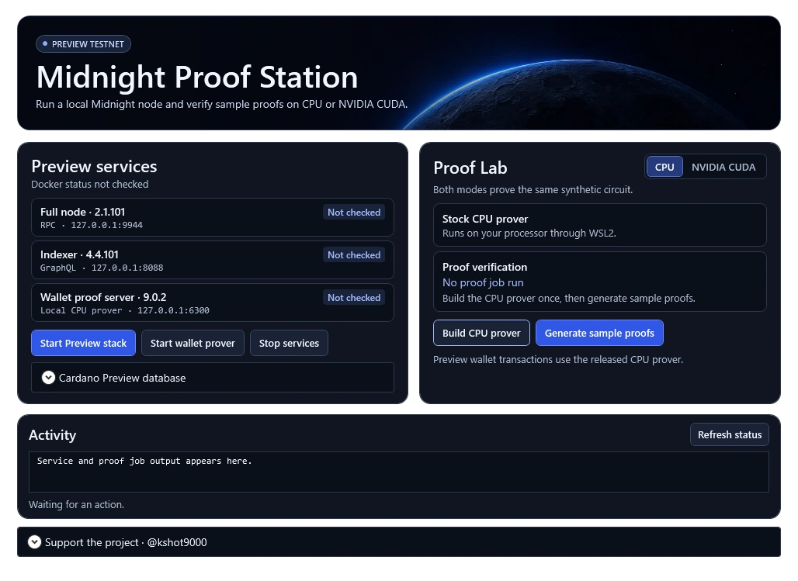
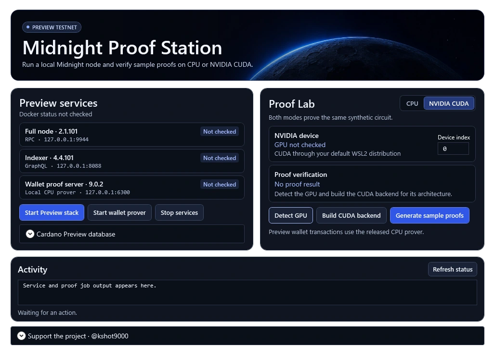

Preview services
Monitor the full node and indexer, and run the released CPU prover for Preview wallet transactions. Node sync requires a synced Cardano Preview db-sync connection.
Open-source work by Kyle Cox
I build privacy-preserving apps and developer tools for Midnight. Explore the project designs, open-source code, and progress on testnet.
Preview & Preprod testnets
Windows x64 · v0.1.2
Run a Midnight Preview full node and indexer, and generate zero-knowledge sample proofs locally with CPU or NVIDIA CUDA.
Download the midnight-proof-station-win-x64 artifact from a successful Proof Station run. A GitHub sign-in is required.


Monitor the full node and indexer, and run the released CPU prover for Preview wallet transactions. Node sync requires a synced Cardano Preview db-sync connection.
Both modes run the same synthetic circuit in WSL2 and verify a cold and a warm proof. CUDA also reports device calls and peak tracked VRAM.
Original RTX 3090 benchmarkTwo CPU proofs verified on Linux, and both modes rendered from the packaged Windows app. The app’s RTX 3090 CUDA run and live Preview sync are pending.
Build and test resultsMy build queue in order, with the privacy design and testnet status of each project.
There are no projects that match these filters.
Next build · SOL-2
An issuer grants a private credential. The holder proves a fact, like being over 21 or a member in good standing, and the verifier receives a yes/no result.
Grant proposal drafted · Testnet build pending
Cast a private ballot with proven eligibility and publish an auditable tally.
Concept · Ballot and tally design pending
Keep bids private through closing, then prove the winner while keeping losing bids private.
Concept · Settlement design pending
Prove a milestone is funded and delivery approved while keeping rates and work history private.
Concept · Asset and dispute design pending
Give a site a yes/no check for age, residency, or a licence using an issuer’s attestation.
Concept · Issuer requirements pending
Prove employment, tenure, or salary above a threshold while keeping identity and exact pay private.
Concept · Attestation design pending
An off-chain privacy auditor for reviewing what a dApp requests, proves, and shares.
Audit tool concept · Based on inspectable evidence
Compare Midnight dApps by the data they collect and the claims their proofs support.
Directory concept · Scoring rubric pending
Learn Compact through small examples for credentials, voting, sealed bids, and escrow.
Learning tool concept · Examples pending
Estimate testnet fee capacity and how long registered tNIGHT takes to replenish it.
Planner concept · Outputs will be labelled estimates
The catalogue describes planned uses. I’ll mark an app live on testnet when there’s a verified deployment and reproducible evidence.
Prove the fact the verifier asks for. An age check can reveal that you’re over 21 while keeping your birth date private.
A Compact circuit can use data from a local private store. The ledger verifies a zero-knowledge proof against public inputs. The app’s design determines what appears in public outputs and state.
Compact privacy guideRegistered NIGHT generates the DUST that pays fees. The fee amount is public. A shielded DUST spend keeps the fee input hidden, while timing and other public transaction details can still be observable.
DUST registration guideThis catalogue runs in your browser. The checklist applies when testing a dApp on Midnight.
Check compatible versions